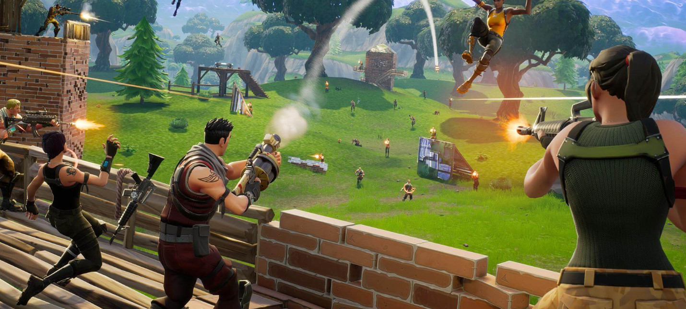
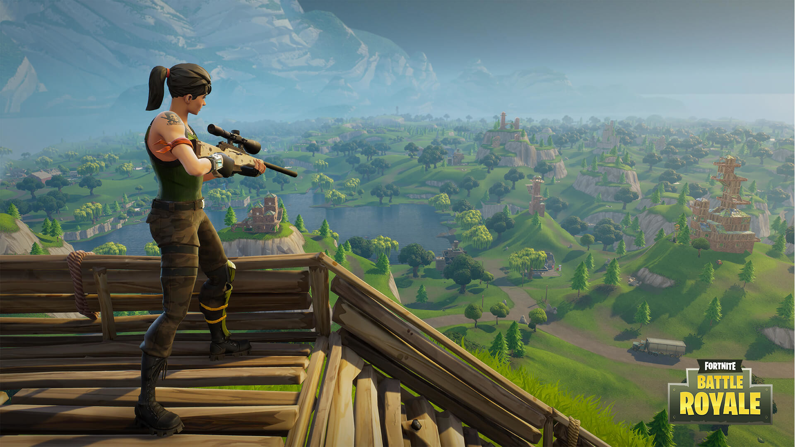

Fortnite
Fortnite — відеогра жанру тактико-стратегічного шутера від третьої особи з елементами виживання та будівництва, один з трьох режимів гри Fortnite. Розроблена Epic Games та People Can Fly. Fortnite: Save the World була випущенна в серпні 2017 року в ранньому доступі для Windows, macOS, PlayStation 4 і Xbox One. Гравець виступає в ролі бійця, що бореться за виживання на відкритій місцевості. Для цього він повинен знищувати ворогів, змагатися з іншими гравцями, займатися будівництвом і майструвати різні речі. Пропонується одноосібна гра, в парі чи в складі загону.

Персонажі Fortnite, звані героями, поділяються на класи і підкласи. Характеристики кожного героя залежать від його рівня розвитку, що зростає з набором досвіду, котрий міститься в спеціальних чипах. Система характеристик під назвою F.O.R.T включає: fortitude — стійкість (обсяг здоров'я), offence — напад (сила атаки), resistance — опір (броня) і tech — технології (ефективність будівель і споруд). Під час виконання завдання герой може носити при собі щонайбільше 50 предметів. Персонажі володіють пасивними і активними уміннями, що відкриваються в «дереві навичок». Відкриття нової навички вимагає певної кількості очок навичок, що видаються зі зростанням рівня персонажа. Паралельно на «дереві досліджень» відкриваються вдосконалення героя. Додатково параметри збільшують врятовані під час місій люди. Потім їх можна прикликати для допомоги в бою чи відправляти на пошук корисних речей. Кожен гравець може володіти кількома персонажами, що бувають різної рідкості. Що рідший герой, то вищі його характеристики і кількість можливих умінь.